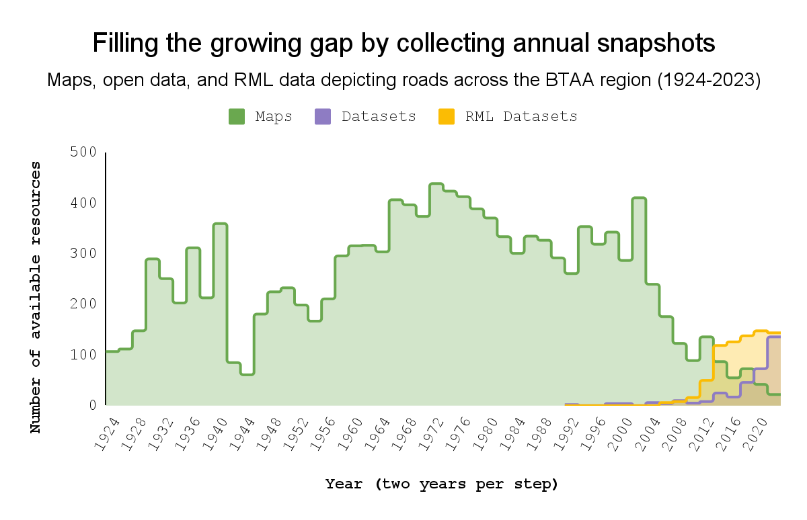

<!DOCTYPE html>
<html lang="en">
<head>
    <meta charset="utf-8" />
    <meta name="viewport" content="width=device-width, initial-scale=1.0, maximum-scale=1.0, user-scalable=no" />

    <title></title>
    <link rel="stylesheet" href="dist/reset.css">
    <link rel="stylesheet" href="dist/reveal.css" />
    <link rel="stylesheet" href="css/slides-extended.css" />
    <link rel="stylesheet" href="dist/theme/dracula.css" id="theme" />
    <link rel="stylesheet" href="plugin/highlight/zenburn.css" />
    <link rel="stylesheet" href="plugin/customcontrols/style.css">

    <link rel="stylesheet" href="plugin/reveal-pointer/pointer.css" />


    <script defer src="dist/fontawesome/all.min.js"></script>

    <script type="text/javascript">
        function pageInIframe() {
            return (window.location !== window.parent.location);
        }

        let forgetPop = true;
        function onPopState(event) {
            if(forgetPop){
                forgetPop = false;
            } else if( pageInIframe()) {
                parent.postMessage(event.target.location.href, "app://obsidian.md");
            }
        }
        window.onpopstate = onPopState;
        window.onmessage = event => {
            if(event.data == "reload"){
                window.document.location.reload();
            }
            forgetPop = true;
        }

        function fitElements() {
            const itemsToFit = document.getElementsByClassName('fitText');
            for (const item in itemsToFit) {
                if (Object.hasOwnProperty.call(itemsToFit, item)) {
                    const element = itemsToFit[item];
                    fitElement(element, 1, 1000);
                    element.classList.remove('fitText');
                }
            }
        }

        function fitElement(element, start, end) {

            let size = (end + start) / 2;
            element.style.fontSize = `${size}px`;

            if (Math.abs(start - end) < 1) {
                while (element.scrollHeight > element.offsetHeight) {
                    size--;
                    element.style.fontSize = `${size}px`;
                }
                return;
            }

            if (element.scrollHeight > element.offsetHeight) {
                fitElement(element, start, size);
            } else {
                fitElement(element, size, end);
            }
        }


        document.onreadystatechange = () => {
            fitElements();
            if (document.readyState === 'complete') {
                if (pageInIframe() && window.location.href.indexOf("?export") != -1){
                    parent.postMessage(event.target.location.href, "app://obsidian.md");
                }
                if (window.location.href.indexOf("print-pdf") != -1){
                    let stateCheck = setInterval(() => {
                        clearInterval(stateCheck);
                        window.print();
                    }, 250);
                }
            }
        };
    </script>
</head>

<body>
    <div class="reveal">
        <div class="slides"><section  data-markdown><script type="text/template"><!-- .slide: class="drop" template="" -->
<div class="" style="position: absolute; left: 0px; top: 0px; height: 700px; width: 960px; min-height: 700px; display: flex; flex-direction: column; align-items: center; justify-content: center" absolute="true">

## **Ephemeral** Geospatial Data

### An Impending **Digital Dark Age**
</div></script></section><section  data-markdown><script type="text/template"><!-- .slide: class="drop" template="" -->
<div class="" style="position: absolute; left: 0px; top: 0px; height: 700px; width: 960px; min-height: 700px; display: flex; flex-direction: column; align-items: center; justify-content: center" absolute="true">

# Part 1: **Paradox**
</div></script></section><section ><section data-markdown><script type="text/template"><!-- .slide: class="drop" template="" -->
<div class="" style="position: absolute; left: 0px; top: 0px; height: 700px; width: 960px; min-height: 700px; display: flex; flex-direction: column; align-items: center; justify-content: center" absolute="true">

## A looming dark age

  - Abundance of contemporary geodata 
  - In the midst of a growing **digital dark age** due to a failure to save and archive it
</div></script></section><section data-markdown><script type="text/template"><!-- .slide: class="drop" template="" -->
<div class="" style="position: absolute; left: 0px; top: 0px; height: 700px; width: 960px; min-height: 700px; display: flex; flex-direction: column; align-items: center; justify-content: center" absolute="true">

## What is data **empherality**?


</div></script></section><section data-markdown><script type="text/template"><!-- .slide: class="drop" template="" -->
<div class="" style="position: absolute; left: 0px; top: 0px; height: 700px; width: 960px; min-height: 700px; display: flex; flex-direction: column; align-items: center; justify-content: center" absolute="true">

*Transitory nature*


</div></script></section><section data-markdown><script type="text/template"><!-- .slide: class="drop" template="" -->
<div class="" style="position: absolute; left: 0px; top: 0px; height: 700px; width: 960px; min-height: 700px; display: flex; flex-direction: column; align-items: center; justify-content: center" absolute="true">


 Regular revisions **overwrite** yesterday's records
</div></script></section><section data-markdown><script type="text/template"><!-- .slide: class="drop" template="" -->
<div class="" style="position: absolute; left: 0px; top: 0px; height: 700px; width: 960px; min-height: 700px; display: flex; flex-direction: column; align-items: center; justify-content: center" absolute="true">

## Why is this a problem?

- Longitudinal studies need temporally specific resources
- If users do not find the data online, they assume *it does not exist*
</div></script></section></section><section ><section data-markdown><script type="text/template"><!-- .slide: class="drop" template="" -->
<div class="" style="position: absolute; left: 0px; top: 0px; height: 700px; width: 960px; min-height: 700px; display: flex; flex-direction: column; align-items: center; justify-content: center" absolute="true">

###  Collection Practices in Map Libraries

</div></script></section><section data-markdown><script type="text/template"><!-- .slide: class="drop" template="" -->
<div class="" style="position: absolute; left: 0px; top: 0px; height: 700px; width: 960px; min-height: 700px; display: flex; flex-direction: column; align-items: center; justify-content: center" absolute="true">

## Federal 

### government sources
</div></script></section><section data-markdown><script type="text/template"><!-- .slide: class="drop" template="" -->
<div class="" style="position: absolute; left: 0px; top: 0px; height: 700px; width: 960px; min-height: 700px; display: flex; flex-direction: column; align-items: center; justify-content: center" absolute="true">

Dates of last **print** distribution


</div></script></section><section data-markdown><script type="text/template"><!-- .slide: class="drop" template="" -->
<div class="" style="position: absolute; left: 0px; top: 0px; height: 700px; width: 960px; min-height: 700px; display: flex; flex-direction: column; align-items: center; justify-content: center" absolute="true">

**FDLP**: transitioning to centralized online distribution


</div></script></section><section data-markdown><script type="text/template"><!-- .slide: class="drop" template="" -->
<div class="" style="position: absolute; left: 0px; top: 0px; height: 700px; width: 960px; min-height: 700px; display: flex; flex-direction: column; align-items: center; justify-content: center" absolute="true">

## State and local

### government sources
</div></script></section><section data-markdown><script type="text/template"><!-- .slide: class="drop" template="" -->
<div class="" style="position: absolute; left: 0px; top: 0px; height: 700px; width: 960px; min-height: 700px; display: flex; flex-direction: column; align-items: center; justify-content: center" absolute="true">


City issued map collected by Borchert Library
</div></script></section><section data-markdown><script type="text/template"><!-- .slide: class="drop" template="" -->
<div class="" style="position: absolute; left: 0px; top: 0px; height: 700px; width: 960px; min-height: 700px; display: flex; flex-direction: column; align-items: center; justify-content: center" absolute="true">


Commercially produced map collected by Borchert Library
</div></script></section><section data-markdown><script type="text/template"><!-- .slide: class="drop" template="" -->
<div class="" style="position: absolute; left: 0px; top: 0px; height: 700px; width: 960px; min-height: 700px; display: flex; flex-direction: column; align-items: center; justify-content: center" absolute="true">


Ramsey County Open Data Portal
</div></script></section></section><section  data-markdown><script type="text/template"><!-- .slide: class="drop" template="" -->
<div class="" style="position: absolute; left: 0px; top: 0px; height: 700px; width: 960px; min-height: 700px; display: flex; flex-direction: column; align-items: center; justify-content: center" absolute="true">

# Part 2: **Analysis**
</div></script></section><section ><section data-markdown><script type="text/template"><!-- .slide: class="drop" template="" -->
<div class="" style="position: absolute; left: 0px; top: 0px; height: 700px; width: 960px; min-height: 700px; display: flex; flex-direction: column; align-items: center; justify-content: center" absolute="true">

## Study 1

**Road** maps and geodata across the *BTAA region*
</div></script></section><section data-markdown><script type="text/template"><!-- .slide: class="drop" template="" -->
<div class="" style="position: absolute; left: 0px; top: 0px; height: 700px; width: 960px; min-height: 700px; display: flex; flex-direction: column; align-items: center; justify-content: center" absolute="true">

BTAA-GIN states and institutions


</div></script></section><section data-markdown><script type="text/template"><!-- .slide: class="drop" template="" -->
<div class="" style="position: absolute; left: 0px; top: 0px; height: 700px; width: 960px; min-height: 700px; display: flex; flex-direction: column; align-items: center; justify-content: center" absolute="true">

### Study 1 Parameters

- *Resources*
	 1. library-held print **maps**  
	 2. public open **geodata**
- *Time Span*: 100 years; **1924-2023**
- *Temporal fields*
	1. Temporal coverage
	2. Date modified
	3. Date issued
- *Subject/Keywords* 
	1. Roads
	2. Centerline
	3. Streets
</div></script></section><section data-markdown><script type="text/template"><!-- .slide: class="drop" template="" -->
<div class="" style="position: absolute; left: 0px; top: 0px; height: 700px; width: 960px; min-height: 700px; display: flex; flex-direction: column; align-items: center; justify-content: center" absolute="true">

### Aggregation tools


</div></script></section><section data-markdown><script type="text/template"><!-- .slide: class="drop" template="" -->
<div class="" style="position: absolute; left: 0px; top: 0px; height: 700px; width: 960px; min-height: 700px; display: flex; flex-direction: column; align-items: center; justify-content: center" absolute="true">


Maps
</div></script></section><section data-markdown><script type="text/template"><!-- .slide: class="drop" template="" -->
<div class="" style="position: absolute; left: 0px; top: 0px; height: 700px; width: 960px; min-height: 700px; display: flex; flex-direction: column; align-items: center; justify-content: center" absolute="true">


Maps and open geodata
</div></script></section></section><section ><section data-markdown><script type="text/template"><!-- .slide: class="drop" template="" -->
<div class="" style="position: absolute; left: 0px; top: 0px; height: 700px; width: 960px; min-height: 700px; display: flex; flex-direction: column; align-items: center; justify-content: center" absolute="true">

## Study 2

**Road** maps and geodata depicting **Minneapolis**
</div></script></section><section data-markdown><script type="text/template"><!-- .slide: class="drop" template="" -->
<div class="" style="position: absolute; left: 0px; top: 0px; height: 700px; width: 960px; min-height: 700px; display: flex; flex-direction: column; align-items: center; justify-content: center" absolute="true">

### Study 2 Parameters

- *Resources*
   - John R. Borchert Library **maps**
   - Minnesota state, county, and city **data portals**
- *Time Span*:  **1950-2023**
- *Temporal fields*
	1. Temporal coverage
	2. Date modified
	3. Date issued
- *Subject/Keywords*
	1. Roads
	2. Centerline
	3. Streets
</div></script></section><section data-markdown><script type="text/template"><!-- .slide: class="drop" template="" -->
<div class="" style="position: absolute; left: 0px; top: 0px; height: 700px; width: 960px; min-height: 700px; display: flex; flex-direction: column; align-items: center; justify-content: center" absolute="true">


Minneapolis **road maps** in the Borchert Map Library
</div></script></section><section data-markdown><script type="text/template"><!-- .slide: class="drop" template="" -->
<div class="" style="position: absolute; left: 0px; top: 0px; height: 700px; width: 960px; min-height: 700px; display: flex; flex-direction: column; align-items: center; justify-content: center" absolute="true">


Minneapolis **road geodata** in local data portals
</div></script></section><section data-markdown><script type="text/template"><!-- .slide: class="drop" template="" -->
<div class="" style="position: absolute; left: 0px; top: 0px; height: 700px; width: 960px; min-height: 700px; display: flex; flex-direction: column; align-items: center; justify-content: center" absolute="true">


**Combined** print and digital resources for Minneapolis roads
</div></script></section></section><section ><section data-markdown><script type="text/template"><!-- .slide: class="drop" template="" -->
<div class="" style="position: absolute; left: 0px; top: 0px; height: 700px; width: 960px; min-height: 700px; display: flex; flex-direction: column; align-items: center; justify-content: center" absolute="true">

## Study 3

Comparing content in *ArcGIS Hubs* in **2019** vs **2023**
</div></script></section><section data-markdown><script type="text/template"><!-- .slide: class="drop" template="" -->
<div class="" style="position: absolute; left: 0px; top: 0px; height: 700px; width: 960px; min-height: 700px; display: flex; flex-direction: column; align-items: center; justify-content: center" absolute="true">

### Study 3 Parameters

- *Source Collections*:  **30 ArcGIS Hubs**  that were live during both time periods in various states across the Big Ten Academic Alliance (BTAA)
- *Dates of harvest*: We compared the content from two months:
	1. May **2019**
	2. April **2023**
- *Temporal Fields*
    1. Temporal Coverage
    2. Date Modified
</div></script></section><section data-markdown><script type="text/template"><!-- .slide: class="drop" template="" -->
<div class="" style="position: absolute; left: 0px; top: 0px; height: 700px; width: 960px; min-height: 700px; display: flex; flex-direction: column; align-items: center; justify-content: center" absolute="true">


</div></script></section></section><section ><section data-markdown><script type="text/template"><!-- .slide: class="drop" template="" -->
<div class="" style="position: absolute; left: 0px; top: 0px; height: 700px; width: 960px; min-height: 700px; display: flex; flex-direction: column; align-items: center; justify-content: center" absolute="true">

# Part 3: **Action**
</div></script></section><section data-markdown><script type="text/template"><!-- .slide: class="drop" template="" -->
<div class="" style="position: absolute; left: 0px; top: 0px; height: 700px; width: 960px; min-height: 700px; display: flex; flex-direction: column; align-items: center; justify-content: center" absolute="true">

## What can **libraries** do?
</div></script></section><section data-markdown><script type="text/template"><!-- .slide: class="drop" template="" -->
<div class="" style="position: absolute; left: 0px; top: 0px; height: 700px; width: 960px; min-height: 700px; display: flex; flex-direction: column; align-items: center; justify-content: center" absolute="true">

### Challenges
 
  - Lack of suitable repositories
  - Privacy and policy issues
  - Resistance from data providers
  - Limited financial and staff resources
</div></script></section><section data-markdown><script type="text/template"><!-- .slide: class="drop" template="" -->
<div class="" style="position: absolute; left: 0px; top: 0px; height: 700px; width: 960px; min-height: 700px; display: flex; flex-direction: column; align-items: center; justify-content: center" absolute="true">




Maps, open geodata, and **Robinson Map Library** geodata
</div></script></section><section data-markdown><script type="text/template"><!-- .slide: class="drop" template="" -->
<div class="" style="position: absolute; left: 0px; top: 0px; height: 700px; width: 960px; min-height: 700px; display: flex; flex-direction: column; align-items: center; justify-content: center" absolute="true">


BTAA-GIN Incremental Steps to a Geodata Collection
</div></script></section><section data-markdown><script type="text/template"><!-- .slide: class="drop" template="" -->
<div class="" style="position: absolute; left: 0px; top: 0px; height: 700px; width: 960px; min-height: 700px; display: flex; flex-direction: column; align-items: center; justify-content: center" absolute="true">

## Call to Action 

  - **Start small**: save snapshots of high priority datasets even if you do not have a repository
  - Use **minimum viable solutions**: a file server, basic discovery metadata
  - Explore options for **collaboration**
  - *Gradually expand* efforts and infrastructure over time
</div></script></section></section><section ><section data-markdown><script type="text/template"><!-- .slide: class="drop" template="" -->
<div class="" style="position: absolute; left: 0px; top: 0px; height: 700px; width: 960px; min-height: 700px; display: flex; flex-direction: column; align-items: center; justify-content: center" absolute="true">

# Part 4:  **Forecast**
</div></script></section><section data-markdown><script type="text/template"><!-- .slide: class="drop" template="" -->
<div class="" style="position: absolute; left: 0px; top: 0px; height: 700px; width: 960px; min-height: 700px; display: flex; flex-direction: column; align-items: center; justify-content: center" absolute="true">


</div></script></section><section data-markdown><script type="text/template"><!-- .slide: class="drop" template="" -->
<div class="" style="position: absolute; left: 0px; top: 0px; height: 700px; width: 960px; min-height: 700px; display: flex; flex-direction: column; align-items: center; justify-content: center" absolute="true">


</div></script></section><section data-markdown><script type="text/template"><!-- .slide: class="drop" template="" -->
<div class="" style="position: absolute; left: 0px; top: 0px; height: 700px; width: 960px; min-height: 700px; display: flex; flex-direction: column; align-items: center; justify-content: center" absolute="true">


</div></script></section></section><section  data-markdown><script type="text/template"><!-- .slide: class="drop" template="" -->
<div class="" style="position: absolute; left: 0px; top: 0px; height: 700px; width: 960px; min-height: 700px; display: flex; flex-direction: column; align-items: center; justify-content: center" absolute="true">

### Thank You

- Jamie Martindale
- Melinda Kernik
- Ryan Mattke
</div></script></section><section  data-markdown><script type="text/template"><!-- .slide: class="drop" template="" -->
<div class="" style="position: absolute; left: 0px; top: 0px; height: 700px; width: 960px; min-height: 700px; display: flex; flex-direction: column; align-items: center; justify-content: center" absolute="true">

# *Questions?*

Karen Majewicz

Geo4LibCamp 2024
</div></script></section></div>
    </div>

    <script src="dist/reveal.js"></script>
    <script src="plugin/notes/notes.js"></script>
    <script src="plugin/markdown/markdown.js"></script>
    <script src="plugin/highlight/highlight.js"></script>

    <script src="plugin/zoom/zoom.js"></script>
    <script src="plugin/math/math.js"></script>
    <script src="plugin/mermaid/mermaid.js"></script>
    <script src="plugin/chart/chart.min.js"></script>
    <script src="plugin/chart/plugin.js"></script>
    <script src="plugin/customcontrols/plugin.js"></script>
    <script src="plugin/reveal-pointer/pointer.js"></script>

    <script>
        function extend() {
            const target = {};
            for (let i = 0; i < arguments.length; i++) {
                const source = arguments[i];
                for (const key in source) {
                    if (source.hasOwnProperty(key)) {
                        target[key] = source[key];
                    }
                }
            }
            return target;
        }

        function isLight(color) {
            let hex = color.replace('#', '');

            // convert #fff => #ffffff
            if (hex.length == 3) {
                hex = `${hex[0]}${hex[0]}${hex[1]}${hex[1]}${hex[2]}${hex[2]}`;
            }

            const c_r = parseInt(hex.substr(0, 2), 16);
            const c_g = parseInt(hex.substr(2, 2), 16);
            const c_b = parseInt(hex.substr(4, 2), 16);
            const brightness = ((c_r * 299) + (c_g * 587) + (c_b * 114)) / 1000;
            return brightness > 155;
        }

        const bgColor = getComputedStyle(document.documentElement).getPropertyValue('--r-background-color').trim();

        if (isLight(bgColor)) {
            document.body.classList.add('has-light-background');
        } else {
            document.body.classList.add('has-dark-background');
        }

        // default options to init reveal.js
        const defaultOptions = {
            controls: true,
            progress: true,
            history: true,
            center: true,
            transition: 'default', // none/fade/slide/convex/concave/zoom
            plugins: [
                RevealMarkdown,
                RevealHighlight,
                RevealZoom,
                RevealNotes,
                RevealMath.MathJax3,
                RevealMermaid,
                RevealChart,
                RevealCustomControls,
                RevealPointer,
            ],
            allottedTime: 120 * 1000,
            mathjax3: {
                mathjax: 'plugin/math/mathjax/tex-mml-chtml.js',
            },
            markdown: {
                gfm: true,
                mangle: true,
                pedantic: false,
                smartLists: false,
                smartypants: false,
            },
            mermaid: {
                theme: isLight ? 'default' : 'dark',
            },
            customcontrols: {
                controls: [
                ]
            },
        };

        if ( pageInIframe() ) {
            defaultOptions.scrollActivationWidth = 5;
        }

        // options from URL query string
        const queryOptions = Reveal().getQueryHash() || {};

        const options = extend(defaultOptions, {"controls":true,"progress":false,"slideNumber":true,"center":true,"transition":"slide","transitionSpeed":"default","width":960,"height":700,"margin":0.04}, queryOptions);
    </script>

    <script>
      Reveal.initialize(options);
    </script>
</body>

<!-- created with Slides Extended -->
</html>
